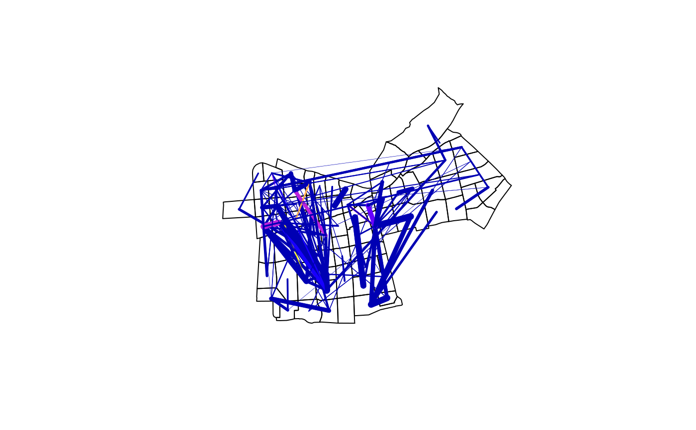
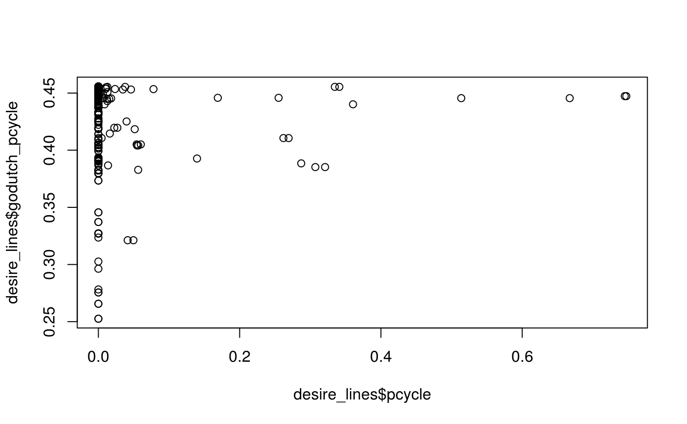
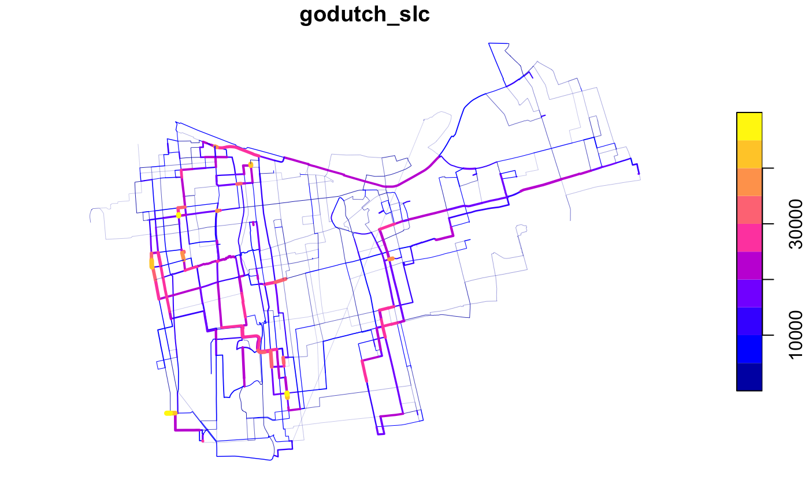

vignettes/pct-international.Rmd
pct-international.RmdThe package README shows how the PCT can be used to get and reproduce some of the datasets from the PCT package, based on an example in the city of Leeds. This vignette shows how the package can be used to create estimates of cycling potential in other cities.
Let’s start by loading the package:
The input data for this vignetted was created using code in the pctSantiago project. It looks like this, in terms of the flow data:
head(santiago_od) #> ZonaOrigen ZonaDestino n av_weight all range_weights pcycle #> 1 259 497 5 690.5146 3452.573 62.42723 0 #> 2 260 261 17 205.6069 3495.318 967.24461 0 #> 3 261 260 17 227.5245 3867.916 967.24461 0 #> 4 263 264 5 517.2128 2586.064 819.21471 0 #> 5 264 263 5 508.4814 2542.407 852.77144 0 #> 6 266 501 2 1982.2633 3964.527 1700.07456 0
In terms of the zone data, they look like this:
sf:::print.sf(santiago_zones) #> Simple feature collection with 75 features and 1 field #> geometry type: POLYGON #> dimension: XY #> bbox: xmin: -70.69203 ymin: -33.47766 xmax: -70.58239 ymax: -33.403 #> geographic CRS: WGS 84 #> First 10 features: #> geo_code geometry #> 259 259 POLYGON ((-70.65174 -33.431... #> 260 260 POLYGON ((-70.65008 -33.443... #> 261 261 POLYGON ((-70.64562 -33.437... #> 262 262 POLYGON ((-70.64643 -33.477... #> 263 263 POLYGON ((-70.64913 -33.459... #> 264 264 POLYGON ((-70.64914 -33.459... #> 265 265 POLYGON ((-70.65058 -33.450... #> 266 266 POLYGON ((-70.65058 -33.450... #> 292 292 POLYGON ((-70.60615 -33.419... #> 293 293 POLYGON ((-70.60673 -33.415... plot(santiago_zones)
Note that we have cycling estimates for each desire line. If this data is not known, current cycling levels can be approximated for all desire lines as the city-wide average, e.g. around 5% for Santiago.
The origin-destination data can be converted to geographic desire lines using the stplanr function od2line as follows:
desire_lines = stplanr::od2line(flow = santiago_od, zones = santiago_zones) #> Creating centroids representing desire line start and end points.
The resulting lines can then be plotted on top of zone data as follows:
plot(santiago_zones$geometry) plot(santiago_lines["pcycle"], lwd = santiago_lines$n / 3, add = TRUE)

# gj = geojsonsf::sf_geojson(santiago_lines) # path = file.path(tempdir(), "dl.geojson") # write(gj, path) # html_map = geoplumber::gp_map(path, browse_map = FALSE) # htmltools::includeHTML(html_map)
The previous map suggests that the data is reliable: we have created a good approximation of the travel pattern in central Santiago.
To estimate cycling potential, we need estimates of distance and hilliness. The area under investigation is relatively flat so we can make the simplifying assumption that hilliness is 0% for all lines (normally we would get this information from a routing service):
desire_lines$hilliness = 0
And what about the distance? We can calculated it as follows (note we converted this into a numeric object to prevent issues associated with the units package):
desire_lines$distance = as.numeric(sf::st_length(desire_lines)) #> Linking to GEOS 3.8.1, GDAL 3.1.1, PROJ 6.3.1
Now we have (very) crude estimates of distance and hilliness, we can estimate the cycling potential as follows:
desire_lines$godutch_pcycle = uptake_pct_godutch(distance = desire_lines$distance, gradient = 0) #> Distance assumed in m, switching to km
Let’s take a look at the results, compared with the current levels of cycling, and compared with distance:
cor(x = desire_lines$pcycle, y = desire_lines$godutch_pcycle) #> [1] 0.08743354 plot(x = desire_lines$pcycle, y = desire_lines$godutch_pcycle)

As expected, there is a positive (albeit small) positive correlation between current and potential levels of cycling. The result shows clearly that distance decay kicks in just after 2km, but still at 8 km there is a 25% mode share, suggesting a major switch to cycling.
We can put the results on a map as follows:
library(leaflet) leaflet(width = "100%") %>% addTiles() %>% addPolylines(data = desire_lines, weight = desire_lines$pcycle * 5)
leaflet(width = "100%") %>% addTiles() %>% addPolylines(data = desire_lines, weight = desire_lines$godutch_pcycle * 5)
The results show that there is substantial potential for increasing the levels of cycling in central Santiago, based on origin-destination data alone. However, to inform policy, more detailed estimates of cycling potential are needed, with results that go down to the level of individual streets. This involves routing.
There are many ways to do calculate a path on the street network. The main options are local routing, where the calculation is done based on data stored locally (on your computer) and routing services, where the data is done remotely (‘in the cloud’). Let’s use a remote routing service to convert the straight lines generated in the previous section into routes that could realistically be taken by people cycling (the next line does not run by default because it requires an API key saved as an environment variable, see the documentation of route_cyclestreets() for details for details).
santiago_routes_cs = stplanr::line2route(desire_lines) # > 10 % out of 200 distances calculated # > 20 % out of 200 distances calculated # > 30 % out of 200 distances calculated # > 40 % out of 200 distances calculated # > 50 % out of 200 distances calculated # > 60 % out of 200 distances calculated # > 70 % out of 200 distances calculated # > 80 % out of 200 distances calculated # > 90 % out of 200 distances calculated # > 100 % out of 200 distances calculated # > Warning message: # > In value[[3L]](cond) : Fail for line number 32
Note that one of the routes failed. We can look at this route as follows, to try to understand what happened:
leaflet() %>% addTiles() %>% addPolylines(data = santiago_routes_cs[32, ])
The result shows that one end of the route connects to the Sendero Ciclistas, which the routing service may be unable to reach. At this stage there are 2 main options: 1) to omit the data point from the analysis, acknowledging that the data is incomplete; or 2) identify a nearby location where the service can route to. In this case we will take option 1. Before we remove the offending line 32 from the analysis, we will join the data from the desire lines back onto the results:
routes = sf::st_sf( cbind(sf::st_drop_geometry(santiago_routes_cs), sf::st_drop_geometry(desire_lines)), geometry = santiago_routes_cs$geometry )
Update results…
routes$godutch_slc = round(routes$godutch_pcycle * routes$all) rnet = stplanr::overline2(routes, "godutch_slc") plot(rnet, lwd = rnet$godutch_slc / mean(rnet$godutch_slc))

# library(tmap) # tmap_mode("view") # tm_shape(rnet) + # tm_lines(lwd = "godutch_slc", scale = 9)
Clearly to do this in a production environment we would use a larger dataset, but the concepts would be the same. We would refine the method in multiple ways. The next basic step, however, would be to convert the straight desire lines into routes, to calculate more accurate distance and hilliness levels for each OD pair. Then we would be able to create a route network to help prioritise cycling across the city.
route_segments_1_5 = route(l = desire_lines[1:5, ], route_fun = cyclestreets::journey) mapview::mapview(route_segments_1_5)